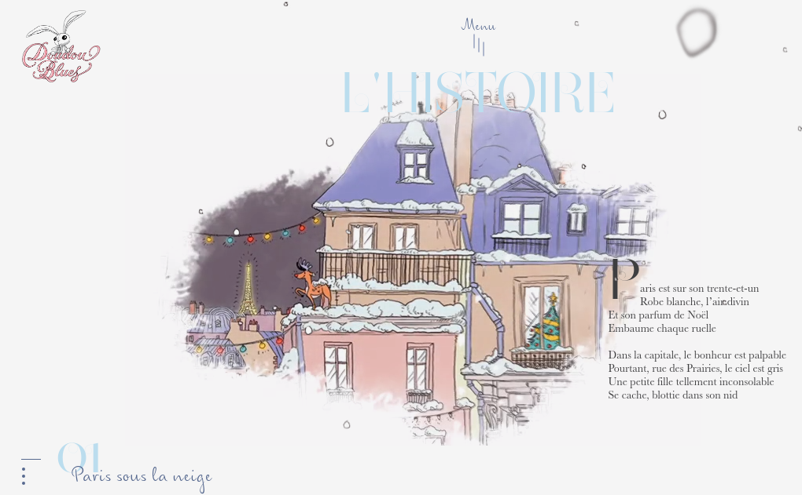
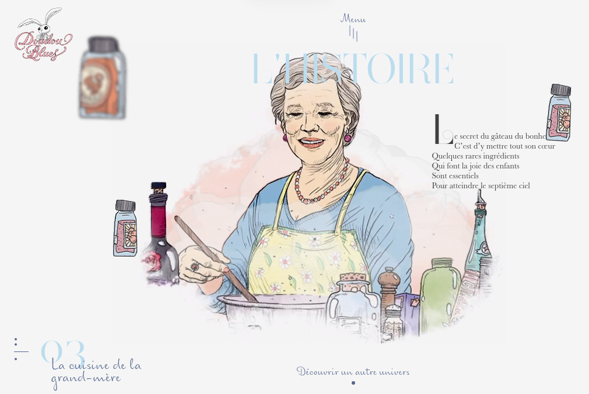
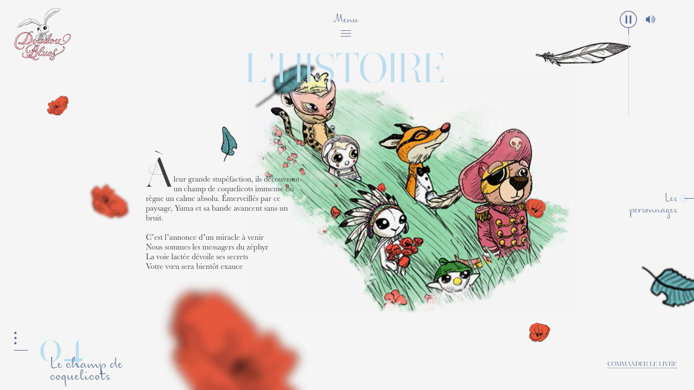

J'aime beaucoup l'effet d'animation sur le site avec les élements qui :
bougent
ont un effet de transparence
Cela donne un coté "vivant" au site mais assez doux (car les élements ont un mouvement lent et ils sont peu denses).